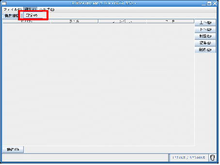
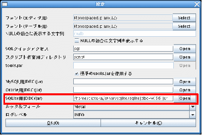
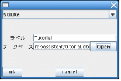
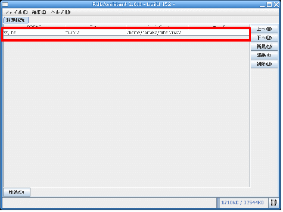
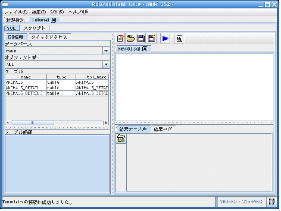
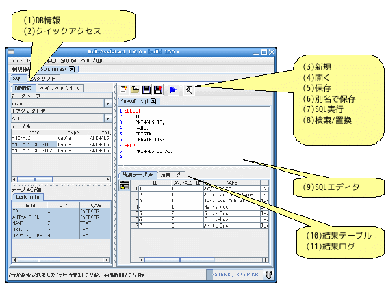
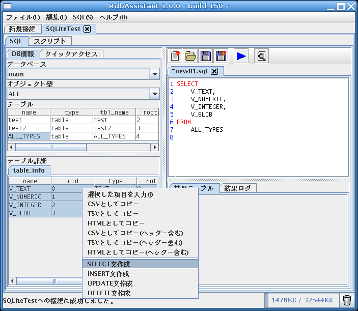
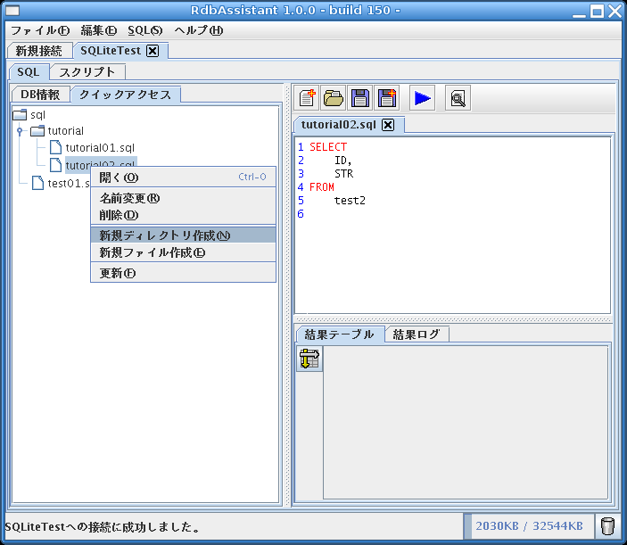
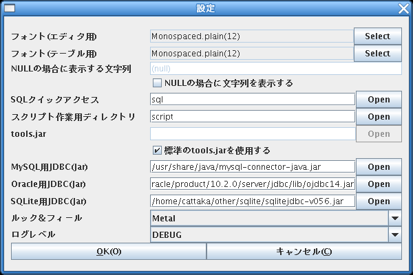

RdbAssistant マニュアル
Copyright (c) 2009, Takao Sumitomo
目次
1.概要 1
2.動作環境 1
3.主な特徴 1
4.初期設定手順 1
5.SQLエディタ 3
6.スクリプトエディタ 5
7.設定 8
OracleとMySQLとSQLiteに対応したJavaで動作するSQLエディタです。
JSPに良く似たスクリプトが使用可能であり、
複数テーブルの関連のある行だけを一度で取得したり、
差分を作成して表示することができます。
Java(TM) 2 SDK, Standard Edition Version 1.5.0以上
(スクリプト機能を使用するためにはJDK付属のtools.jarが必要です)
◆複数のRDBMSに対応しています。
Oracle(9i以降)
MySQL(5以降)
SQLite(3以降)
◆SQL編集と実行が行えます
入力補助としてデータベースのオブジェクトの閲覧することができます。
DML文の自動生成ができます。
データベースから取得した情報はCSV、TSV、HTML形式でクリップボードにコピーできるので
Excel等へそのままコピー＆ペーストできます。
◆スクリプト機能
JSPの様なスクリプトが使用できます。
スクリプトにより複数のテーブルに跨ったデータを一度に抜き出して表示することができます。
抜き出したデータを比較し、差分をとって表示することができます。
1.JDBCドライバの入手
Oracle(Oracle JDBC Driver)
http://www.oracle.com/technology/global/jp/software/tech/java/jdbc/index.html
MySQL(MySQL
Connector/J)
http://dev.mysql.com/downloads/#connector-j
SQLite(SQLiteJDBC)
http://www.zentus.com/sqlitejdbc/
2.設定
メニューバーの編集から設定を選び、
使用したいRDBMSのJDBCのJarファイルを指定してください。


3.接続先の設定
メインウインドウの新規接続タブの新規ボタンを押し、
使用したいRDBMSを選択した後、それぞれ必要な情報を入力してください。
最後にOKボタンを押すと接続先リストに入力した内容が追加されます。


4.接続
接続先リストから対象を選択して接続ボタンを押すと
RDBMSへの接続が開始されます。

SQLタブを選択するとSQLの入力と実行が行えます。
◆画面の内容

(1)DB情報
接続中のデータベースのテーブルやカラムの情報が表示されます。
一覧から選択したカラムを入力したり、SQL文を自動生成することができます。

(2)クイックアクセス
設定ダイアログにて指定したディレクトリの内容を表示します。
作業でよく使うSQLを作成しておけばSQLを素早く実行するのに便利です。

(3)新規
新しいSQLファイルを作成します
(4)開く
既存のSQLファイルを開きます
(5)保存
編集中のSQLファイルを上書き保存します。
(6)別名で保存
編集中のSQLファイルを別名を指定して保存します。
(7)SQL実行
現在開いているSQLを実行します。
(8)検索/置換
SQLエディタ内を検索/置換します。
(9)SQLエディタ
SQLの内容がここに表示/入力されます。
(10)結果テーブル
SQLの実行結果が表示されます。
右クリックによりTSV、CSV、HTML形式でクリップボードにコピーできます。
(11)結果ログ
SQLの実行結果やエラーログが表示されます。
スクリプトタブを選択するとスクリプトの作成と実行が行えます。
スクリプトはJSPに良く似た形式であり、スクリプトレットを使用することで
Java言語のコードを埋め込むことができます。
スクリプト機能を使用するためには設定ダイアログにて
tools.jarとスクリプト作業用ディレクトリが正しく設定されている必要があります。
スクリプトで使用できる関数等は付属のドキュメントをご覧下さい。
◆画面の内容
(1)スクリプト一覧
設定ダイアログにて指定したディレクトリの内容を表示します。
(2)新規
新しいスクリプトを作成します
(3)開く
既存のスクリプトを開きます
(4)保存
編集中のスクリプトを上書き保存します。
(5)別名で保存
編集中のスクリプトを別名を指定して保存します。
(6)スクリプト実行
現在開いているスクリプトを実行します。
コンパイルされていない状態ならコンパイルしてから実行します。
(7)コンパイル
編集中のスクリプトをコンパイルします。
(8)検索/置換
スクリプトエディタ内を検索/置換します。
(9)スクリプトエディタ
スクリプトの内容がここに表示/入力されます。
(10)結果ログ
スクリプトのコンパイル結果や実行の成功/失敗、
エラーログが表示されます。
(11)変換されたソース
コンパイル時にスクリプトが変換されたJavaファイルが表示されます。
(12)出力テーブル
スクリプトにより出力されたテーブルが表示されます。
右クリックによりTSV、CSV、HTML形式でクリップボードにコピーできます。
HTML形式では前景色、背景色、枠線も併せて出力されます。
※：Microsoft Office Excelにそのまま貼り付けることができます。
(13)出力ログ
スクリプトにより出力されたテキストログが表示されます。
◆スクリプトについて
スクリプトは以下の構成要素からなります。
・スクリプトレット
スクリプト内でスクリプトレット（<%と%>）で囲まれたものは
Javaのコードとして扱われます。
・出力先
スクリプト内では暗黙オブジェクトとしてoutとtableの２つが利用できます。
これらには文字列やテーブルを出力することが可能で
スクリプトの実行完了後に出力された内容を画面上で確認することができます。
out : java.io.PrintWriter
スクリプト内でこのオブジェクトに出力を行うと、
書き込んだ内容が出力ログに表示されます。
table
:
net.cattaka.rdbassistant.script.core.ScriptTable
スクリプト内でこのオブジェクトに出力を行うと、
書き込んだ内容が出力テーブルに表示されます。
・ディレクティブ
page
JSPのpageディレクティブと同様にimportするクラスを指定します。
importのみサポートします。
例：<%@ page import="java.util.*" %>
include
JSPのincludeディレクティブと同様に指定されたファイルを
その位置に展開します
例：<%@ include file="functions.script" %>

フォント(エディタ用)
SQLエディタやスクリプトエディタの表示に使用するフォントを指定します。
フォント(テーブル用)
テーブルの表示に使用するフォントを指定します。
NULLの場合に表示する文字列
テーブルのセルの内容がnullの場合に表示する文字列です。
『NULLの場合に文字列を表示する』の項目がオンの場合のみ有効です。
NULLの場合に文字列を表示する
オフの場合はテーブルのセルの内容がnullの場合はそのセルには何も表示しません。
オンの場合は『NULLの場合に表示する文字列』で指定した文字列を表示します。
SQLクイックアクセス
SQLエディタのクイックアクセスに表示するディレクトリのルートを指定します。
tools.jar
スクリプトエディタにて使用するtools.jarを指定します。
『標準のtools.jarを使用する』の項目がオフの場合のみ指定可能です。
通常tools.jarはJavaのJDKに含まれています。JREには含まれていません。
標準のtools.jarを使用する
現在実行中のJavaのランタイムのtools.jarを使用します。
標準のtools.jarが使用できない場合は『tools.jar』の項目にて手動で指定してください。
MySQL用JDBC(Jar)
MySQLのJDBCのJarファイルを指定します。MySQLを使用する場合は必須です。
Oracle用JDBC(Jar)
OracleのJDBCのJarファイルを指定します。Oracleを使用する場合は必須です。
SQLite用JDBC(Jar)
SQLiteのJDBCのJarファイルを指定します。SQLiteを使用する場合は必須です。
ルック＆フィール
アプリケーションの外観を指定します。
ログレベル
ログに出力する閾値を指定します。
出力されたログは『ヘルプ→ログ一覧表示』から確認できます。
last modified 2009/08/01